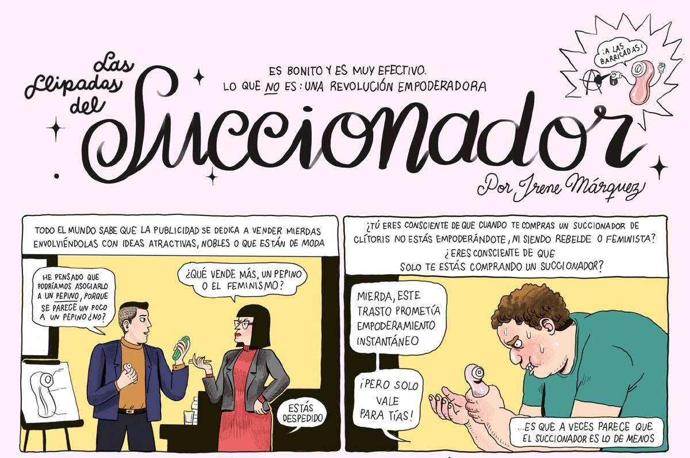
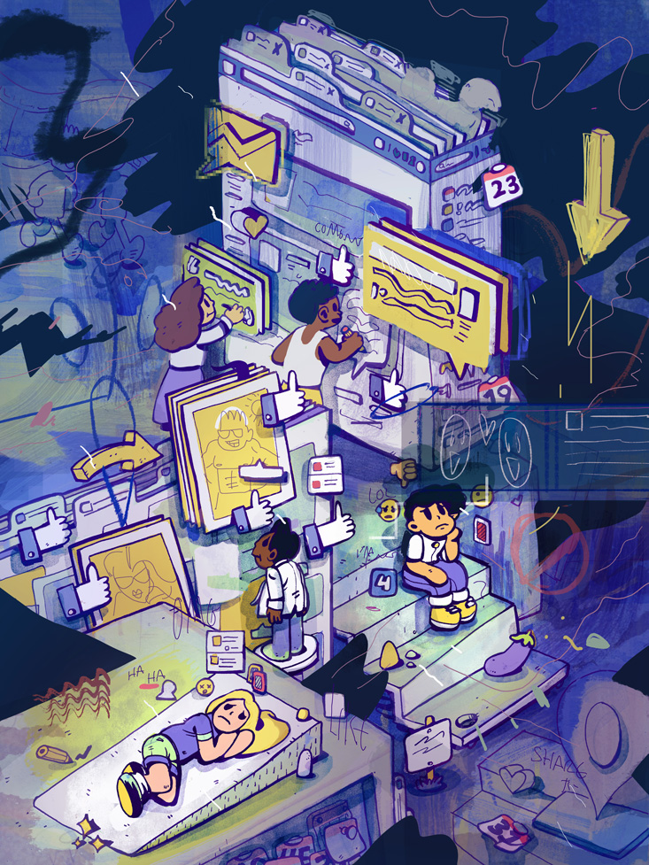

¡¡ORGASMOS IMPRESIONANTES CON EL REVOLUCIONARIO MASTURBADOR DE DISEÑO DEPORTIVO!!

La problemática que más vislumbro en la sociedad moderna es la autolimitación. No soportamos ampliar el horizonte dentro de un marco que nos está obligando a autolimitarnos, No soportamos prescindir de dinámicas de dependencia: consumo permanente y el profundo convencimiento de que es la única opción.
Kant explica justo esto cuando nos define la ''minoría de edad''. En este caso lo aplico al concepto normativo de sexualidad, en concreto a cómo siento que a mí se me presenta:
''Ansío liberarme de la insatisfacción que implica relacionarme sexualmente con varones, de que la validación masculina sea el eje, ansío liberarme del falo; pero a base de canalizar todo ese sentimiento en forma de confianza hacia una empresa: una empresa que me suministra orgasmos a granel por medio de satisfyers y productos varios''
No uso otro ejemplo porque estoy socializada como mujer, pero imagino que para los hombres es similar con la pornografía y otras entidades que complementan la opresión femenina. Aunque cada vez el género y los roles quedan más obsoletos y van desapareciendo, y no por las razones más saludables (básicamente el nicho de mercado se ha ampliado), pero de eso es algo que desarrollaremos más adelante.
Paso la patata caliente de una mano a otra con tal de no hacerme cargo de la raíz del problema: la minoría de edad (entendida de forma clara como la estructura de: dependencia -> necesidad de extraer de fuera para saciar momentáneamente-> anhelo constante) Es decir, no quiero hacerme cargo de lo que implica poseer autosuficiencia sexual y encuentros verdaderamente genuinos porque estoy cómoda/o en las dinámicas que me imponen. Me he convertido en la estrella de mar del sistema (me dejo hacer todo). Pero... ¿hasta qué punto me compensa? ¿por cuánto tiempo he de creer que me libera?
Que decida utilizar la sexualidad como tópico central no es por morbo, no es por crear sensación, ni es por casualidad. Todo lo que hacemos, sentimos y pensamos gira a nivel inconsciente en torno a la sexualidad y al dinero, pero si me apuras, diría que exclusivamente en torno al sexo y al erotismo. Todo lo que hacemos, sentimos y pensamos nos causa excitación o aversión. Desde aquí todo adquiere cierto sentido, todos los matices han cambiado cuando esta idea ronda.
Volviendo al hecho de que la autolimitación es la clave de por qué nos encontramos en este punto: no hemos decidido individualmente ni de forma expresa que así sea, ni si quiera es una cuestión de maldad, sadismo o del demonio. El sistema capitalista y la latente tecnocracia no son el nuevo alter-ego de Satanás.
Es pura eficiencia, el flujo de productividad más eficiente es en el que no cabe la moral, en el que no caben los principios básicos para un ¿bienestar colectivo?. Que algo no sea ''bueno'' no significa que sea ''malo''. Aquí evitaré binarismos de cualquier tipo porque los considero inútiles. El alcance que tenga una empresa, lo que abarque y lo presente que esté en nuestro día a día es directamente proporcional a cómo nos deshumaniza.
Relacionándonos mediante el hedonismo, la gratificación inmediata, la búsqueda de sensaciones más y más extremas y que lleguen más y más rápido... No hay que dar muchas vueltas para concluir en que el sexo es la plataforma ideal para saciar ese anhelo común, en que es un pretexto ideal para inducirnos al consumo y sugestionarnos. La consecuencia de un estudio de intereses.
Sí, quizás la forma en que experimentas la sexualidad no hace que te sientas cómoda...pero compensarlo con un objeto que potencia la sensación física y luego te deja vacía y `'de bajona'', se me acerca más a una raya de cocaína que a una liberación sexual real.
EL MONAZO DE INSTAGRAM

Dentro del tratamiento que formó parte de mi vida para resolver mis problemas de adicción, una de las pautas consistía en deshacerme de mis redes sociales y usar desde ahí un teléfono rudimentario de llamadas, un Nokia de 2007 con tapadera. (Ese evento se me hizo un terreno fértil para restablecer y desmontar mi vida)
Fue recaer y volver a crearme un perfil de Instagram. Mi consumo no es tan denso sin performance mediática. Asocio las sustancias con teatralidad por todas las referencias culturales que he absorbido. Márketing. Muchas veces tomaba drogas a modo de símbolo de rebeldía que debía ser expuesto ante la masa, ante el aburrimiento colectivo, era un complemento más dentro de la identidad subversiva y antisistema que había confeccionado cuidadosamente con los años, una identidad que per sé era un mecanismo de defensa.
Al volver a mi hogar, a la sobriedad, a la conciencia y al amor (porque extraer de fuera no suele compensar a largo plazo, guardar la basura bajo la alfombra acaba por acumularse y oler, todo lo que sube luego baja y la anestesia no es lo que sana) me quedó el dilema de Instagram (no tengo perfiles en otras plataformas). Igual justificaba mantenerlo por seguir evadiéndome entre likes, comentarios, aprobación ajena, información que fluye sin pausa y entretiene... desde el autoengaño; o tal vez debía ser más flexible y aprender a usarlo como la herramienta que potencialmente es. Para salir de dudas decidí desinstalármelo y ver cómo reaccionaba mi cerebro adicto:
-Aún no me había deshecho de la aplicación y ya andaba con el sentimiento de novedad, ese impulso de emprender algo diferente. Sabía que había tomado una decisión coherente y eso me enorgullecía. Miré cuánto tiempo de media invertía en Instagram y... más de dos horas diarias. ¿Cuánto puede modificar la química de mi cerebro estar dos horas al día frente a una pantalla que me muestra todo lo que quiero ver? O si nos ponemos pesimistas, ¿Hasta qué punto transforma mi mente y mis emociones un logaritmo que esculpe poco a poco mis gustos y mis aspiraciones para que consuma lo que su publicidad y las empresas que intervienen me presentan? ¿Son sólo dos horas o esas suculentas y atrayentes ideas y eslóganes se arrastran por mucho más tiempo? ¿Qué ocurriría con mi vida y la consecución de mis propósitos si esa energía fuese canalizada a simplemente SER: a todo riesgo, al movimiento, a la presencia con las personas con las que comparto experiencia rutinaria, a crear?
`'Los únicos interesados en cambiar el mundo son los pesimistas, porque los optimistas están encantados con lo que hay'' - José Saramago
No merezco ser complaciente con lo que me aleja de mí.
-Salí a caminar y vi cómo asocio ciertas escenas casuales (mi gato sentado, el cielo con colores saturados, ir vestida de forma que me hace sentirme bonita, la composición de todos los elementos urbanos en sintonía, una idea sugerente que se me ocurre al respecto..) con el hecho de publicarlo. Como si eso fuese la acreditación de que está sucediendo. Como si la exhibición en internet certificase que es digno de apreciación. ¿Necesito notificarlo ante el resto para creérmelo yo? ¿Me importan tanto los demás? ¿Y si sólo es el propósito inocente y genuino de compartirme?
-No sabía si lo tenía tan presente (y por tanto me resta tanta energía que no me da ni para darme cuenta) o si es por la decisión y lo que implica, que la abstinencia de dopamina fácil me recuerde tanto revisar el feed, actualizar mi perfil, añadir tal o cual, buscar x o y...
-Me resultaba peligrosamente raro no ver tantas caras y cuerpos de mujeres por la calle, por la playa... que me hiciesen sentirme insatisfecha con lo que soy físicamente. Y eso que no ese no es el contenido que voluntariamente consumía.
-Me había acostumbrado de la manera más sutil, progresiva y apetecible a la impaciencia, a la angustia, a permanecer en el conflicto. Distraída de que iba como pollo sin cabeza en busca de estímulos.
¡¡Qué miedo!! ¡¡Tenía que decidir yo!! ¡¡Era la responsable de mi vida!!
Pero también había una buena noticia: nací para ello.